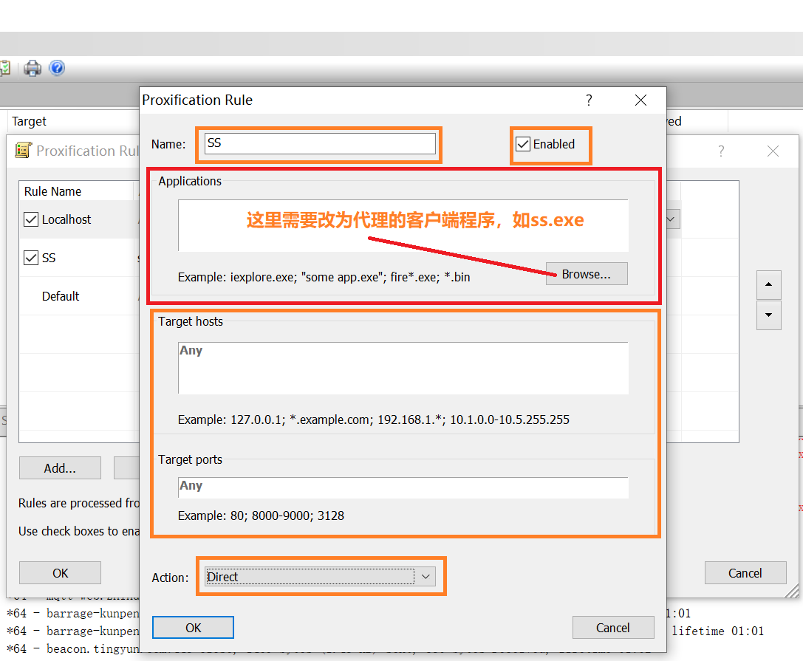

玩转Zotero
本文是一个Zotero用户从小白到小白的记录，文中展示了Zotero的上手技巧以及使用过程中的一些心得，希望能对想入门Zotero的读者有所帮助。
Zotero 官网有 所有插件的列表。每个插件都附有简介。个人最推荐的三个插件是：
- ZotFile：管理 item 附件的插件。以操作 pdf 文件为主，如自动重命名（
author-year-title.pdf），按 collection 移动文件到文件夹，将用户在 pdf 上的注释和高亮提取成独立笔记。 - Scholar Citations：用于自动（批量）提取每个文章的 Google Scholar 引用数。
- Better BibTeX：用于增强 Zotero 的参考文献输出功能。如果你不使用 LaTeX 写文章，也许不必安装。
记录一下Zotero在抓取元数据失败的解决方法。出现抓取失败，可能是访问不了google scholar导致的，这时需要科学上网。目前我的代理仅能在浏览器中使用，而在Zotero中也未找到设置代理的选项。这挺坑的，有代理却不能用；想到设置全局代理应该可行。
看了一下，浏览器的代理是通过SOCKS5监听本地端口1080，所以如果能有一款代理软件将其他程序的流量都走1080端口就可以了。还真被我找到了这么一款软件：proxifier。设置步骤为：
安装proxifier （v3.3)，不再赘述，启动后填入注册码：JCZBX-A3N3F-9DWY5-327V5-DKUXX , (backup: LPZLA-FW4R4-NV52E-Q9RYW-PH3ZY)；
设置监听端口，即本地的1080端口：proxifier -> Profile -> Proxy servers -> Add: 地址: 127.0.0.1,端口：1080；
设置SS为直连（因为如果SS也走代理隧道的话，那就没法连上代理主机了，会形成loop）：proxifier -> Profile -> Proxifition rules

每次使用先开SS，再开proxifier即可（当然，不需要全局代理就不用开proxifier了）
这之后再用Zotero抓取元数据，发现果然是走的代理了，Nice~
本博客所有文章除特别声明外，均采用 CC BY-SA 4.0 协议 ，转载请注明出处！